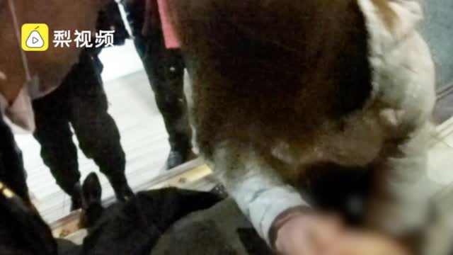

别再宣传错误知识了。晕倒抽搐的人，不要往他嘴里塞任何东西。要做的是清理周围障碍，防止病人伤到自己，以及把病人头部侧歪，防止呕吐物引起窒息。@中国新闻周刊:【#学生为救晕倒女子用手塞嘴防咬舌# 手多处被咬破】10月11日，黑龙江大庆，一女子患心脏病车站内突然晕倒抽搐，路过的大二女生高艳敏冲上前跪地施救，因为事发突然，没有代替物品，她边把手伸进女子嘴里防止咬舌，等到急救人员来时，高艳敏的手上多处被咬破。@梨视频 一手Video的秒拍视频  433万次播放 01:58
 一手Video的秒拍视频
一手Video的秒拍视频